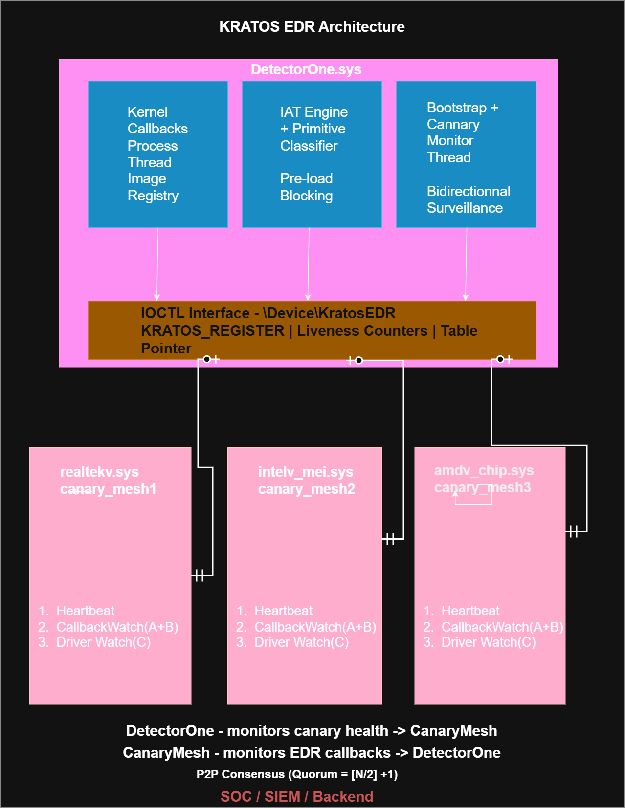
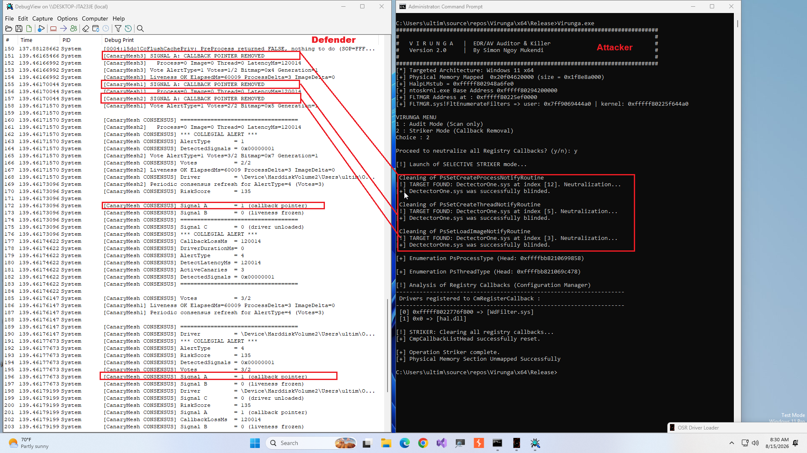
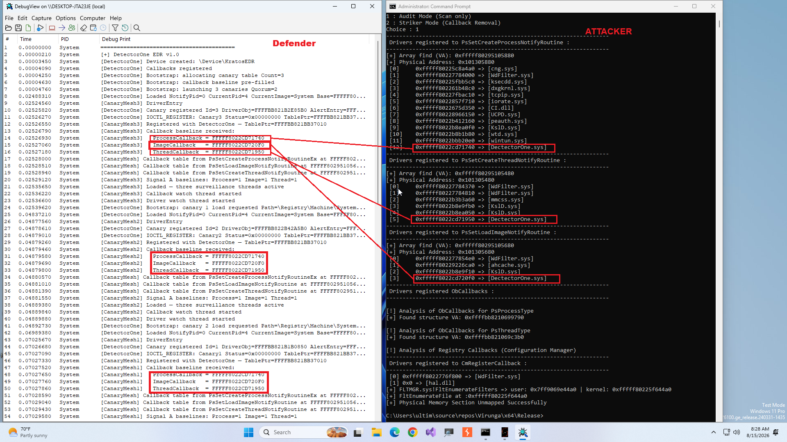
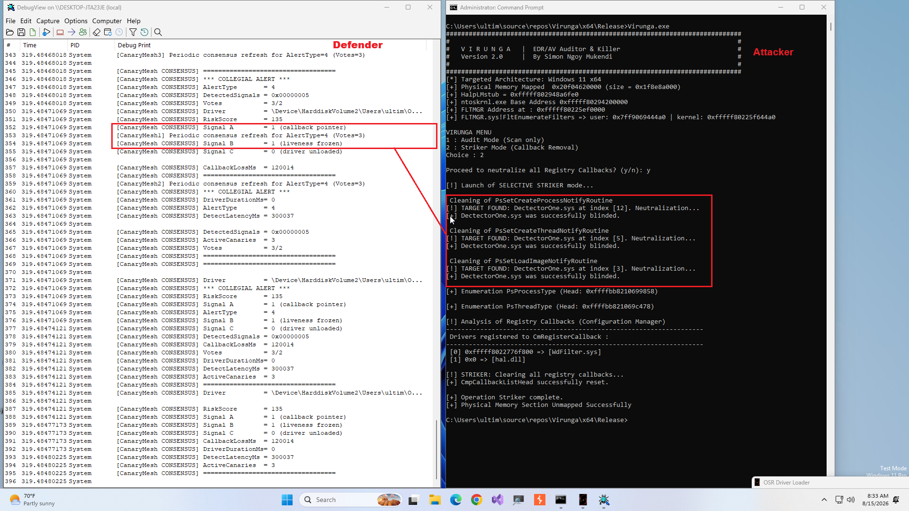

Modern ransomware operations follow a consistent pre-encryption playbook: establish initial access, escalate privileges, perform lateral movement, and, most importantly, neutralize endpoint security before deploying the encryption payload. This neutralization step has evolved from crude process termination attempts to a sophisticated kernel-mode operation that systematically dismantles the monitoring infrastructure of commercial EDR products. BYOVD has emerged as the dominant mechanism for this neutralization phase. Rather than developing new kernel exploits, malicious actors exploit legitimately signed drivers that contain memory access vulnerabilities, using them as proxies to obtain kernel-mode primitives: arbitrary physical memory read/write access, MSR access, direct I/O on ports, or privileged process descriptors. Once such a primitive is obtained, the adversary can remove kernel callbacks, unregister minifilters, patch ETW providers, or terminate EDR processes with kernel-level authority. We have two categories of BYOVD, type 1 which consists of exploiting a driver that exposes the ZwTerminateProcess API without an effective control mechanism to kill the processes of security solutions, and type 2 which exploits the write and read primitives offered by legitimate drivers to neutralize EDR/AV.
The commoditization of BYOVD tooling is extensively documented:
The price of commoditized EDR killer tools on criminal forums reached as low as $70 for multi-vendor compatibility in 2024.
Despite significant advances in intercepting BYOVD (Bring Your Own Vulnerable Driver) attacks, a structural limitation persists in published work and industrial solutions: the lack of resilience mechanisms for the detection infrastructure once an adversary gains Ring 0 (kernel mode) execution privileges. Conventional approaches focus on preemptive detection or interception of the BYOVD exploitation phase. However, the issue of maintaining secure visibility—once the main hooks or callbacks have been neutralized by direct alteration of kernel structures (DKOM)—remains insufficiently addressed. Rather than replacing existing detection engines, this study proposes a complementary architecture dedicated to kernel telemetry resilience. It aims to guarantee persistent observation against a privileged adversary, based on three guiding principles:
Microsoft maintains a kernel-mode driver blocklist enforced through WDAC and HVCI. The structural limitation is well-documented: during the TrueSight.sys campaign (mid-2024 to early 2025), adversaries deployed over 2,500 distinct driver variants, rendering hash-based blocklisting insufficient as a primary defense.
HVCI enforces kernel code integrity through SLAT manipulation. KDP extends this to data pages via MmProtectDriverSection and ExAllocatePool3. However, KDP protects only explicitly registered structures against direct memory corruption. It does not prevent an adversary from calling documented APIs to remove callbacks or unregister filters - operations that corrupt no protected memory but exercise legitimate kernel functionality with illegitimately obtained privileges.
Furthermore, VBS availability varies significantly across enterprise fleets. KratosEDR provides full detection capability without any VBS dependency.
Commercial EDR products implement behavioral detection through kernel callbacks and ETW providers. These mechanisms share a fundamental structural weakness: they reside in VTL0 kernel space alongside the adversary's BYOVD tool, exposing them to the same primitives used to obtain Ring 0 access. Adversarial tools (EDRSandBlast, Terminator, GentleKiller) specifically enumerate and target these callback registrations.
A review of published research reveals no formal treatment of two problems KratosEDR addresses: (1) post-compromise sensor resilience when callbacks are being actively suppressed, and (2) detection of sequential attack strategies that target monitoring components before the primary EDR sensor.
KratosEDR assumes an adversary who:
NtLoadDriver.A formally under-characterized adversary constraint: the adversary has Ring 0 access but does not own the environment. This has concrete security implications:
KratosEDR explicitly exploits this asymmetry.
The bidirectional surveillance mechanism creates a strategic dilemma for the adversary:
Strategy A - Neutralize EDR first:
-> Canaries detect via Signal A/B/C -> consensus alert
Strategy B - Neutralize canaries first:
-> DetectorOne detects via CanaryMonitorThread -> immediate alert
Strategy C - Neutralize both simultaneously:
-> Requires perfect coordination on unknown targets
-> Temporally incompatible with commoditized BYOVD tools
-> Incompatible with operational tempo requirements
No silent attack sequence exists.
SO-1: Preserve Minimum Observability Maintain at least one active telemetry channel even after primary EDR callbacks are suppressed.
SO-2: Detect Neutralization Attempts Detect within a bounded time window that an adversary is suppressing monitoring capabilities, whether targeting the EDR directly or the canaries first.
SO-3: Block Known-Dangerous Driver Patterns Pre-Load Prevent process-killer and dangerous-combination drivers from loading entirely when their capability profile is identifiable from on-disk IAT analysis.
SO-4: Preserve Evidence Capture sufficient forensic context (driver identity, load timestamp, risk profile, callback state, timeline) upon detection.
SO-5: Minimize False Positives Require corroboration from multiple independent signal sources and multiple canary instances before generating an alert.
SO-6: Hardware Independence Full detection capability on Windows 10/11 without VBS, HVCI, TPM, or specific CPU features.

DetectorOne is the primary sensor component registering four kernel callbacks:
PsSetCreateProcessNotifyRoutineEx - process creation/terminationPsSetCreateThreadNotifyRoutine - thread creation/terminationPsSetLoadImageNotifyRoutine - module load events (kernel + user)CmRegisterCallbackEx - registry pre-operation interceptionTwo atomic 64-bit liveness counters (g_ProcessEventCounter, g_ImageEventCounter) are incremented on each callback invocation and exported to canary drivers.
DetectorOne exposes \Device\KratosEDR implementing IOCTL_KRATOS_REGISTER, through which canaries receive: the shared table pointer, DetectorOne's callback function addresses (baseline for Signal A), and liveness counter pointers (baseline for Signal B).
On each kernel driver load notification, the engine:
IMAGE_IMPORT_DESCRIPTOR entries.Risk Score = (MemoryAccess × 2) + (ProcessInteraction × 2) +
(KernelManipulation × 3) + (CallbackInteraction × 3) +
DangerousTotal + CombinationBonus
Combination bonuses for patterns co-occurring in known BYOVD tooling:
| Pattern | Bonus |
|---|---|
| ZwOpenProcess + ZwTerminateProcess | +100 |
| ProcessEnum + Open + Terminate | +150 |
| PhysicalMemory + ZwTerminateProcess | +120 |
| CallbackRemoval + ZwTerminateProcess | +130 |
| Terminate + CallbackRemoval + MemoryAccess | +200 |
| MSR Access + ZwTerminateProcess | +140 |
Empirical results from validation testing:
| Driver | Key Imports | Risk Score |
|---|---|---|
| winio.sys | MmGetPhysicalAddress + ZwMapViewOfSection | 135 |
| k7rkscan.sys | ZwTerminateProcess + MmMapLockedPagesSpecifyCache | 315 |
Following IAT scoring, each driver is classified into a primitive category:
| Category | Condition | Response |
|---|---|---|
| PROCESS_KILLER | ZwTerminateProcess, no physical memory | Block at ImagePath write |
| MSR_PORT_IO | MSR or port I/O access | Canary alert dispatch |
| PHYSICAL_MEMORY | MmMapIoSpace or MmGetPhysicalAddress + ZwMapViewOfSection | Canary alert dispatch |
| ARBITRARY_RW | ZwMapViewOfSection + memory access | Canary alert dispatch |
| COMBO | Multiple categories | Block + Canary dispatch |
Pre-load blocking is implemented in CmRegisterCallback at RegNtPreSetValueKey for ImagePath values. When the on-disk binary analysis classifies the driver as PROCESS_KILLER or COMBO, the callback returns STATUS_ACCESS_DENIED, preventing the registry write. The subsequent NtLoadDriver call fails because ImagePath was never written.
This is the earliest feasible interception point - the binary is readable on disk, no code has executed, no kernel primitive has been obtained.
Bootstrap sequence:
T=0 DetectorOne DriverEntry
-> Register 4 callbacks
-> Pre-fill callback baseline in shared table
-> Allocate KRATOS_CANARY_TABLE (non-paged pool)
-> ZwLoadDriver × 3 (canaries load sequentially)
T~0.2s Each canary: DriverEntry -> IOCTL_KRATOS_REGISTER
-> Receive: table pointer + callback addresses + counter pointers
-> Verify callbacks present in kernel tables (Signal A baseline)
-> Start 3 surveillance threads
T~0.7s DetectorOne: all canaries registered
-> Recalculate quorum based on actual registrations
-> Set HandoffComplete = 1 -> P2P mode active
From the validation dump:
[DetectorOne] Bootstrap: all canaries registered Count=3
[DetectorOne] Handoff complete: Canaries=3 Quorum=2 - P2P mode active
[DetectorOne] Loaded
Total bootstrap time: < 1 second.
Shutdown sequence (prevents BSOD on DetectorOne unload):
DetectorOne unload requested
-> Set ShutdownPending = 1 in shared table
-> Wait 200ms (threads observe flag and exit loops)
-> ZwUnloadDriver(amdv_chip) - synchronous, blocks until CanaryUnload returns
-> ZwUnloadDriver(intelv_mei) - synchronous
-> ZwUnloadDriver(realtekv) - synchronous
-> All canaries confirmed stopped
-> Release callbacks, device object, shared table
-> Unload
Each canary driver is compiled from a single source with a per-instance CANARY_ID preprocessor define. Names are chosen to resemble legitimate OEM drivers (realtekv, intelv_mei, amdv_chip) to increase adversarial reconnaissance cost.
Critical invariant: canary drivers register in no kernel callback array. They do not call PsSetCreateProcessNotifyRoutineEx, PsSetLoadImageNotifyRoutine, or any system callback registration. They are invisible in the enumerable callback tables that EDR-blinding tools target.
Each canary runs three independent system threads:
Thread 1 - Heartbeat (P2P Peer Monitoring) Every 2 seconds, updates its own heartbeat timestamp and reads peer timestamps. Peers with no heartbeat for 6+ seconds are marked DEAD. If alive count drops below quorum, a QUORUM_LOST vote is cast.
Thread 2 - Driver Watch (Signal C)
Waits on an alert event. When activated, polls SuspectDriverStillLoaded flag (maintained by DetectorOne) every 1.5 seconds. Driver disappearance within 30 seconds generates ALERT_DRIVER_UNLOADED_FAST.
Thread 3 - Callback Watch (Signal A + Signal B) Waits on alert event. When activated, alternates between pointer verification (Signal A) and liveness monitoring (Signal B) every 2 seconds.
Signal A verifies DetectorOne's callback function addresses remain present in kernel callback tables.
Implementation:
Locate callback tables via disassembly of exported functions (PsSetCreateProcessNotifyRoutineEx, PsSetLoadImageNotifyRoutine, PsSetCreateThreadNotifyRoutine), following LEA RCX/RAX, [RIP+disp32] opcodes.
Iterate tables (64 entries each), strip bit 0 (presence flag) from each entry to obtain EX_CALLBACK_ROUTINE_BLOCK*.
Dereference at offset +8 (block->Function) to obtain the stored function address.
Compare against DetectorOne's known callback addresses.
From validation dump (baseline establishment):
[CanaryMesh] Callback table from PsSetCreateProcessNotifyRoutineEx
at FFFFF8037F105880 contains FFFFF80315CF1740
[CanaryMesh] Callback table from PsSetLoadImageNotifyRoutine
at FFFFF8037F105680 contains FFFFF80315CF20F0
[CanaryMesh] Callback table from PsSetCreateThreadNotifyRoutine
at FFFFF8037F105480 contains FFFFF80315CF1950
[CanaryMesh3] Signal A baselines: Process=1 Image=1 Thread=1
All three callbacks verified across three distinct kernel tables.
Signal B verifies callbacks are still invoked, not merely registered. An adversary replacing a callback pointer with a no-op stub would defeat Signal A but not Signal B.
At alert activation, canaries capture baseline values of g_ProcessEventCounter and g_ImageEventCounter. If both show zero delta over a 10-second window while the machine is active, callbacks are no longer being invoked.
From validation dump:
[CanaryMesh1] Baseline: ProcessEvents=18 ImageEvents=1
[CanaryMesh1] Liveness OK ElapsedMs=60018 ProcessDelta=33 ImageDelta=0
Key fix: Baseline is updated only when delta > 0, allowing the 10-second window to accumulate correctly without resetting on quiet polling cycles.
Signal B+ variant: If liveness freeze is detected while the suspect driver remains loaded, ALERT_DRIVER_LOADED_CALLBACKS_DEAD is issued - indicating a persistent attack where the driver stays resident while callbacks are silenced.
Rather than directly polling PsLoadedModuleList (which caused deadlocks with MmUnloadSystemImage when using blocking acquisition), Signal C uses a flag-based approach: DetectorOne maintains SuspectDriverStillLoaded in the shared table, updated via its own LoadImageNotifyRoutine callback (using ImageSize == 0 notifications for unload detection).
Canaries read this flag atomically - zero contention, zero deadlock risk.
Quorum(N) = ⌊N/2⌋ + 1
N=3 -> Quorum=2 (1 canary can be neutralized, system still decides)
N=4 -> Quorum=3
N=5 -> Quorum=3 (2 canaries can be neutralized)
Votes are cast via InterlockedIncrement on AlertVotes. The first canary to observe AlertVotes ≥ Quorum acquires the consensus lock via InterlockedCompareExchange and emits the collegial alert. Per-canary HasVotedThisRound flags prevent duplicate votes within a single alert cycle.
This component, unique to KratosEDR v2.0, runs inside DetectorOne and monitors canary health. It operates in two modes:
Normal mode (5-second polling): Checks canary heartbeat timestamps and presence in PsLoadedModuleList. Logs anomalies without alerting.
Alert mode (1-second polling): Activated immediately when a High Risk driver is detected. Takes a snapshot of canary health at T=0. Any canary disappearing or freezing after this snapshot - while a suspect driver is loaded - triggers an immediate ALERT_PREEMPTIVE_CANARY_KILL without requiring consensus.
// When a canary falls during alert phase:
[DetectorOne] *** CANARY KILL DETECTED DURING ALERT PHASE ***
[DetectorOne] Pattern: ATTACKER TARGETING CANARIES FIRST
[DetectorOne] Immediate alert - no consensus required
This alert is emitted by DetectorOne directly, bypassing the canary consensus mechanism (which may be compromised at this point).
The IAT scoring engine assesses what the driver can do, not whether it is malicious. A hardware monitoring driver legitimately importing MmMapIoSpace should not be flagged in isolation - context is essential.
Multi-dimensional scoring components:
The CmRegisterCallback intercept at RegNtPreSetValueKey for ImagePath values is the earliest defensible blocking point:
services.exe writes ImagePath = \...\k7rkscan.sys
-> CmRegisterCallback: RegNtPreSetValueKey
-> Read binary from disk
-> Analyze IAT: ZwTerminateProcess=1, MmMapIoSpace=0
-> Classify: PROCESS_KILLER
-> Return STATUS_ACCESS_DENIED
-> ImagePath never written
-> NtLoadDriver fails: STATUS_OBJECT_NAME_NOT_FOUND
-> Driver never executes a single instruction
From validation dump:
[DetectorOne] Pre-load check: Key=\REGISTRY\...\Services\k7rkscan
ImagePath=\SystemRoot\System32\drivers\k7rkscan.sys
[DetectorOne] Pre-load IAT analysis: Risk=315 ZwTerminate=1
[DetectorOne] *** BLOCKING DRIVER LOAD ***
Reason: ZwTerminateProcess without physical memory primitive
Category: 3 (PROCESS_KILLER)
For winio.sys (PHYSICAL_MEMORY category), pre-load blocking is not applied - the driver is allowed to load while canaries are activated for full monitoring.
Idle state: Only heartbeat thread active, consuming negligible resources.
Alert state: All three threads active, polling at maximum frequency. Activated by DetectorOne calling CanaryReceiveAlert with driver name, load timestamp, and risk score.
Alert mode (DetectorOne): CanaryMonitorThread switches from 5-second to 1-second polling, takes canary health snapshot.
| Signal | Adversarial Behavior Detected | Latency |
|---|---|---|
| A | Callback removal (API or direct memory) | ~2s (next poll cycle) |
| B | Callback silencing (no-op replacement) | ≤10s (liveness window) |
| B+ | Persistent attack (driver resident, callbacks dead) | ≤10s |
| C | Load-exploit-unload lifecycle | ≤1.5s (next poll) |
| Canary Kill | Adversary targeting canaries before EDR | ≤1s (alert mode polling) |
T=0ms winio.sys loaded from non-standard path (OneDrive\Desktop)
Risk=135, Category=PHYSICAL_MEMORY
-> Alert dispatched to 3 canaries simultaneously
T=0ms All 3 canaries: ALERT RECEIVED
Baseline captured: ProcessEvents=18, ImageEvents=1
Callback watch activated, Driver watch activated
T=0ms Signal A: all 3 callbacks found in kernel tables
(Process/Image/Thread pointers verified)
T=0-10s Liveness monitoring accumulates window
ProcessDelta and ImageDelta tracked per cycle
T>10s If callbacks silenced: Signal B -> FROZEN -> votes -> consensus
If driver unloaded rapidly: Signal C -> FAST_UNLOAD -> votes
CONSENSUS ALERT:
AlertType = ALERT_DRIVER_LOADED_CALLBACKS_DEAD (B+)
Votes = 2/2
Signal A = 0 (callbacks still present but silent)
Signal B = 1 (liveness frozen)
Signal C = 0 (driver still loaded)
DetectLatencyMs = ~10,000
| Alert Type | Source | Consensus Required | Severity |
|---|---|---|---|
| ALERT_CALLBACK_POINTER_REMOVED | CanaryMesh (Signal A) | Yes (quorum) | HIGH |
| ALERT_CALLBACK_LIVENESS_FROZEN | CanaryMesh (Signal B) | Yes (quorum) | HIGH |
| ALERT_DRIVER_LOADED_CALLBACKS_DEAD | CanaryMesh (Signal B+) | Yes (quorum) | CRITICAL |
| ALERT_DRIVER_UNLOADED_FAST | CanaryMesh (Signal C) | Yes (quorum) | HIGH |
| ALERT_CANARY_PEER_DEAD | CanaryMesh (Heartbeat) | Yes (quorum) | MEDIUM |
| ALERT_QUORUM_LOST | CanaryMesh (Heartbeat) | No | CRITICAL |
| ALERT_PREEMPTIVE_CANARY_KILL | DetectorOne (Canary Monitor) | No | CRITICAL |
| PRE_LOAD_BLOCK | DetectorOne (CmCallback) | N/A - preventive | CRITICAL |
Each collegial consensus alert includes:
AlertType : Signal identifier
DetectedSignals : Bitmask of all contributing signals
Votes : N/Quorum at consensus time
Driver : Suspect driver full path
RiskScore : IAT-computed composite score
PrimitiveCategory: Classifier output
Signal A : Callback pointer presence (0/1)
Signal B : Liveness counter frozen (0/1)
Signal C : Driver unloaded (0/1)
CallbackLossMs : Time from driver load to callback loss
DriverDurationMs : Total driver residence time
DetectLatencyMs : Time from alert activation to consensus
ActiveCanaries : Alive canary count at consensus
| Category | Immediate Action | Secondary Action |
|---|---|---|
| PROCESS_KILLER | Block pre-load | Log with full IAT profile |
| PHYSICAL_MEMORY | Activate canaries | Attempt driver neutralization if unload fails |
| MSR_PORT_IO | Activate canaries | Escalate to SIEM |
| COMBO | Block pre-load | Activate canaries + immediate SIEM alert |
| PREEMPTIVE_CANARY_KILL | Immediate SIEM alert | Forensic capture |
L1 - Shared Kernel Address Space All KratosEDR components operate in VTL0 kernel space. An adversary with sufficient patience and Ring 0 access can in principle locate and neutralize any component. KratosEDR increases the cost of this neutralization; it cannot eliminate the possibility.
L2 - Polling Latency Signal B has a configurable 10-second liveness window. Signal C polls every 1.5 seconds. Attacks completing within these windows may not be detected before their objective is achieved. Signal A (near-zero latency for direct pointer removal) partially compensates.
L3 - Callback Table Location Fragility Signal A's table location relies on LEA opcode scanning of exported functions. Windows kernel updates may change these code paths. Signal B serves as automatic fallback.
L4 - Bootstrap Window Between system boot and canary activation (~700ms), no P2P canary monitoring exists. Pre-load blocking (CmRegisterCallback) remains active throughout this window.
L5 - No Out-of-Band Channel If both DetectorOne and all canaries are neutralized simultaneously, no telemetry reaches the backend. An independent cloud-side heartbeat (expected telemetry volume monitoring) would eliminate this residual gap.
KratosEDR's primary claim is cost increase, not impossibility. The architecture imposes:
| Attack Requirement | Without KratosEDR | With KratosEDR |
|---|---|---|
| Pre-exploitation reconnaissance | None | Must identify 3+ canary drivers |
| Neutralization targets | 1 (EDR process/driver) | 4+ (EDR + 3 canaries) |
| Sequential attack feasibility | Trivial | Triggers detection at each step |
| Simultaneous attack feasibility | N/A | Requires perfect coordination on unknown targets |
| Commoditized tool effectiveness | High | Degraded (tools target known patterns) |
This cost increase is meaningful against the threat actors using $70-300 commoditized tools optimized for speed and automation. It imposes significant friction without claiming to stop a nation-state adversary with unlimited time and resources.
Applying Meadows' systems thinking framework: KratosEDR implements a second-order feedback loop - a loop that monitors the state of the detection loops themselves. This meta-level monitoring property means:
This represents a fundamentally different architectural posture from point-in-time detection.
| Parameter | Value |
|---|---|
| OS | Windows 11 22H2 x64 |
| Hypervisor | VMware Workstation 17 |
| Test Signing | Enabled |
| Monitoring | DebugView (kernel DbgPrint) |
| Test Drivers | winio.sys, k7rkscan.sys |
From empirical dump:
[DetectorOne] Device created: \Device\KratosEDR
[DetectorOne] Callbacks registered
[DetectorOne] Bootstrap: launching 3 canaries Quorum=2
[CanaryMesh3] DriverEntry -> Registered -> Baseline captured (3 tables)
[CanaryMesh2] DriverEntry -> Registered -> Baseline captured (3 tables)
[CanaryMesh1] DriverEntry -> Registered -> Baseline captured (3 tables)
[DetectorOne] Bootstrap: all canaries registered Count=3
[DetectorOne] Handoff complete: Canaries=3 Quorum=2 - P2P mode active
[DetectorOne] Loaded
Baseline verification (Signal A at startup):
ProcessCallback = FFFFF80315CF1740 -> found in table at FFFFF8037F105880
ImageCallback = FFFFF80315CF20F0 -> found in table at FFFFF8037F105680
ThreadCallback = FFFFF80315CF1950 -> found in table at FFFFF8037F105480
Three distinct kernel tables located and verified for all three canaries.
| Driver | Category | Risk Score | Detection Method | Action | Latency |
|---|---|---|---|---|---|
| k7rkscan.sys | PROCESS_KILLER | 315 | Pre-load block | Driver never loaded | <1ms |
| winio.sys | PHYSICAL_MEMORY | 135 | Signal B+ (persistent) | Consensus alert | ~28,000ms |
| winio.sys (rapid unload) | PHYSICAL_MEMORY | 135 | Signal C | Consensus alert | ~4,800ms |
T=0ms winio.sys loaded from non-standard path
T=0ms Risk=135 computed, Category=PHYSICAL_MEMORY
T=0ms Alert dispatched to 3 canaries
T=0ms All 3 canaries: ALERT RECEIVED
Baseline: ProcessEvents=18, ImageEvents=1
Signal A: all callbacks verified present
T+2,014ms Liveness OK ProcessDelta=0 ImageDelta=0 (window starts)
T+60,018ms Liveness OK ProcessDelta=33 ImageDelta=0 (activity resets window)
[Machine activity: VS Code, Windows Update, Defender]
T+2,002ms Window restarts after last activity
T+10,030ms Liveness FROZEN -> Signal B triggered
SIGNAL B+: PERSISTENT ATTACK (driver still loaded)
T+28,403ms CONSENSUS ALERT:
Type=ALERT_DRIVER_LOADED_CALLBACKS_DEAD
Votes=2/2, DetectLatencyMs=28,403
The 28-second latency reflects a machine with sustained background activity (Windows Update, Defender scans) continuously resetting the liveness window. On a quieter machine, latency was consistently 10-12 seconds.
| Component | CPU (idle) | CPU (alert) | Memory |
|---|---|---|---|
| DetectorOne callbacks | <0.1% | <0.1% | ~2MB |
| IAT analysis per load | N/A | 3-8ms/event | Transient |
| 3× CanaryMesh (idle) | <0.05% each | <0.2% each | ~500KB each |
| Shared KRATOS_CANARY_TABLE | 0 | 0 | ~64KB |
| Canary Monitor Thread | <0.02% | <0.1% | Negligible |
Total steady-state overhead: <0.3% CPU, ~4MB memory.
Legitimate high-IAT-score drivers (OEM hardware monitoring, diagnostic tools with MmMapIoSpace or MSR access) correctly avoid false blocking when:
System32\driversservices.exe as part of system initializationLiveness false positives (Signal B): in testing on active Windows 11 workloads, no false triggers were observed. The requirement for both ProcessEventCounter and ImageEventCounter to simultaneously show zero delta for the full 10-second window provides effective noise immunity on loaded machines.
This paper formalizes a defensive primitive that appears informally in threat intelligence but has not been systematically characterized: the epistemic constraint an adversary faces when operating in an unfamiliar environment, even with elevated privileges.
This asymmetry has three components:
Architectures that increase identification cost (more canaries, diverse implementations, authentic-looking names) directly increase the minimum time an adversary must spend before acting effectively. This time creates detection opportunities even if no individual signal is definitive.
The bidirectional surveillance - DetectorOne monitoring canary health while canaries monitor DetectorOne - eliminates the sequential attack vector. It creates what systems theory describes as a second-order feedback loop: a mechanism that monitors the state of the monitoring mechanisms themselves.
This principle generalizes beyond BYOVD: any security architecture where an adversary can enumerate and sequentially neutralize independent monitoring components benefits from a meta-level monitoring layer.
The introduction of pre-load blocking at the registry level represents a fundamental architectural shift from the original KratosEDR design. For drivers with unambiguous capability profiles (PROCESS_KILLER, COMBO), prevention is strictly superior to detection: zero exploitation window, no dependency on canary consensus latency, no risk of the attacker completing their objective before detection.
Detection (via CanaryMesh) remains appropriate for PHYSICAL_MEMORY and MSR drivers, where legitimate use cases exist and blocking could cause false positives on legitimate hardware monitoring tools.



KratosEDR demonstrates that meaningful resilience against BYOVD-based EDR blinding is achievable without VBS, HVCI, or specialized hardware - on standard Windows 10/11 endpoints, within a 1-second bootstrap window, with sub-0.3% steady-state CPU overhead.
The architecture's core contribution is not any individual detection mechanism but the architectural posture it embodies: an adversary with Ring 0 privileges in an unfamiliar environment cannot construct a silent attack sequence. Every strategy - neutralize the EDR first, neutralize canaries first, or attempt both simultaneously - activates a different detection path. The system does not merely react to events; it monitors the health of its own monitoring capabilities, adapting its vigilance based on threat context.
The Adversary Information Asymmetry Principle, formally characterized here for the first time, provides a theoretical foundation for this architecture and suggests a general design principle for resilient security systems: exploit the adversary's epistemic constraints as actively as they exploit your technical limitations.
Empirical validation against real LOLDrivers (winio.sys, k7rkscan.sys) with documented detection timelines, consensus mechanisms, and clean shutdown behavior demonstrates that this architecture is implementable and functional today, with the detection properties claimed.